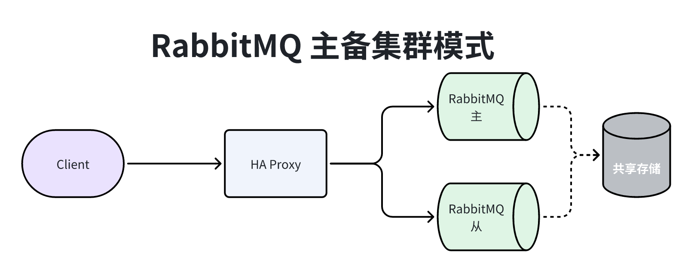
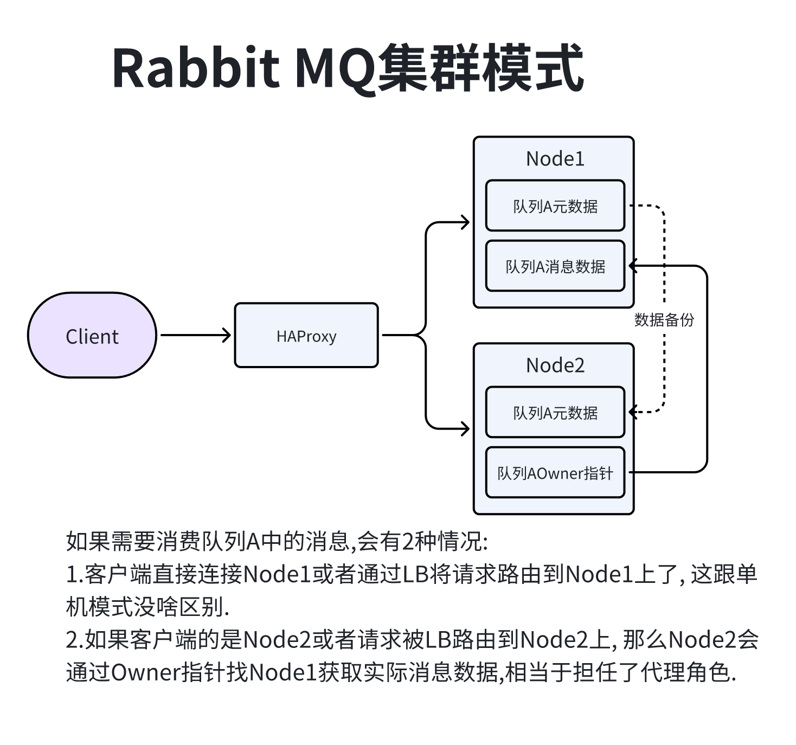
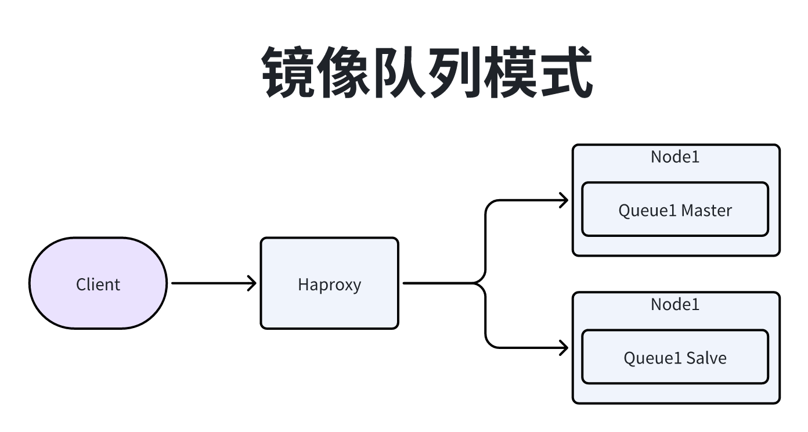
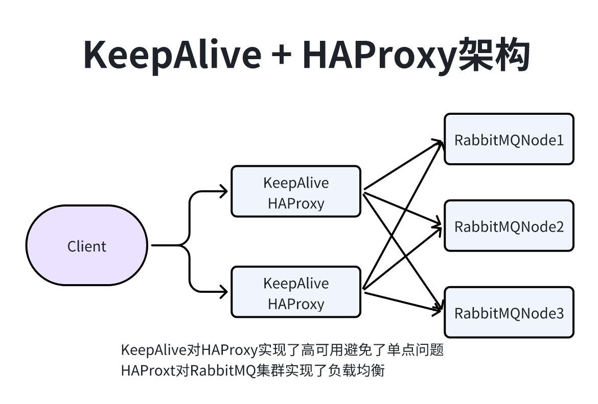

581#环境 centos72#01 安装socat RabbitMQ需要socat和logrotate logrotate操作系统中已经存在3yum install socat -y4
5#02 安装Erlang RabbitMQ基于Erlang的VM运行的. 6#RabbitMQ与Erlang的兼容关系详见https://www.rabbitmq.com/which-erlang.html7#下载地址https://github.com/rabbitmq/erlang-rpm/releases/download/v23.0.2/erlang-23.0.2-1.el7.x86_64.rpm8rpm -ivh erlang-23.0.2-1.el7.x86_64.rpm9
10#03 安装rabbitmq11#下载地址https://github.com/rabbitmq/rabbitmq-server/releases/download/v3.8.5/rabbitmq-server-3.8.5-1.el7.noarch.rpm12rpm -ivh rabbitmq-server-3.8.4-1.el7.noarch.rpm13
14#04 开启可视化插件managerment15cd /usr/lib/rabbitmq/lib/rabbitmq_server-3.8.5/sbin16rabbitmq-plugins help #查看帮助17rabbitmq-plugins list #查看列表18rabbitmq-plugins enable rabbitmq_management #启动管界面19
20#05 启动rabbitmq server21systemctl start rabbitmq-server #方式一启动22rabbitmq-server -detached #方式二启动23
24#06 添加用户25##默认用户guest guest 是不能访问的需要自己添加用户26rabbitmqctl help #查看帮助文件27rabbitmqctl add_user root root #添加用户28rabbitmqctl list_users #查看所有用户29rabbitmqctl set_permissions root -p / ".*" ".*" ".*"#给用户添加虚拟/权限30rabbitmqctl set_user_tags root administrator #给用户设置标签31#07 访问32 192.168.186.10:1567233 root34 root35 36 37 38management: 可以使用消息协议做任何操作的权限,加上:391. 可以使用AMQP协议登录的虚拟主机的权限.402. 查看它们能登录的所有虚拟主机中所有队列;交换器和绑定的权限.413. 查看和关闭它们自己的通道和连接的权限.424. 查看它们能访问的虚拟主机中的全局统计信息, 包括其他用户的活动.43
44policymaker: 所有management能做的, 加上:451. 在它们能通过AMQP协议登录的虚拟主机上. 查看;创建和删除策略以及虚拟主机参数的权限.46
47monitoring: 所有management能做的 加上:481. 列出所有的虚拟主机, 包括列出不能使用消息协议访问的虚拟主机的权限.492. 查看其他用户连接和通道的权限.503. 查看节点级别的数据如内存使用和集群的权限.514. 查看真正的全局所有虚拟主机统计数据的权限.52
53administrator: 所有policymaker和monitoring能做的加上:541. 创建删除虚拟主机的权限.552. 查看;创建和删除用户的权限.563. 查看;创建和删除权限的权限.574. 关闭其他用户连接的权限.58
常用命令
301man rabbitma-server #查看rabbitmq-server帮助文件2rabbitmq-server #前台启动Erlang VM和RabbitMQ3rabbitmq-server -detached #后台启动4rabbitmqctl stop #停止RabbitMQ和Erlang VM5rabbitmqctl list_queues #查看所有队列6rabbitmqctl list_vhosts #查看所有虚拟主机7
8rabbitmqctl start_app #在Erlang VM运行的情况下启动RabbitMQ应用9rabbitmqctl stop_app10
11rabbitmqctl status #查看节点状态12rabbitmq-plugins list #查看所有可用的插件13rabbitmq-plugins enable <plugin-name> #启用插件14rabbitmq-plugins disable <plugin-name> #停用插件15
16rabbitmqctl add_user username password #添加用户17rabbitmqctl list_users #列出所有用户18rabbitmqctl delete_user username #删除用户19rabbitmqctl clear_permissions -p vhostpath username #清除用户权限20rabbitmqctl list_user_permissions username #列出用户权限21rabbitmqctl change_password username newpassword #修改密码22rabbitmqctl set_permissions -p vhostpath username ".*" ".*" ".*" #设置用户权限23
24rabbitmqctl add_vhost vhostpath #创建虚拟主机25rabbitmqctl list_vhosts #列出所以虚拟主机26rabbitmqctl list_permissions -p vhostpath #列出虚拟主机上的所有权限27rabbitmqctl delete_vhost vhost vhostpath #删除虚拟主机28
29rabbitmqctl reset # 移除所有数据, 要在 rabbitmqctl stop_app 之后使用30
151Firehose介绍: 将生产或消费的消息发送到RabbitMQ设置的默认topic类型交换机上, 并设置默认的路由key去查看.2(默认交换机名称amq.rabbitmq.trace topic, 默认生产消费路由key: publish.{exchangename}和deliver.{queuename})3
4开启命令:5 #开启Firehose功能6 rabbitmqctl trace_on [-p vhost]7 #关闭Firehose功能8 rabbitmqctl trace_off [-p vhost]9
10注意: 不建议生产使用Firehose, 比较耗费性能.11
12
13rabbitmq_tracing插件: rabbitmq_tracing是基于Firehose实现的一种GUI工具.14-> 开启命令: rabbitmq-plugins enable rabbitmq_tracing #开启15
421端口说明:2 -> 4369: epmd, RabbitMQ节点和CLI工具使用的对等发现服务.3 -> 5672;5671: 分别为不带TLS和带TLS的AMQP0-9-1和1.0客户端使用.4 -> 25672: 用于节点间和CLI工具通信(Erlang分发服务器端口). 并从动态范围分配(默认情况下限制为单个端口, 计算为AMQP端口+20000)一般这些端口不应暴露出去.5 -> 35672-35682: 由CLI工具(Erlang分发客户端端口)用于与节点进行通信, 并从动态范围(计算为服务器分发端口+10000通过服务器分发端口+10010)分配.6 -> 15672: HTTP API客户端, 管理UI和Rabbitmqadmin(仅在启用了管理插件的情况下).7 -> 61613;61614: 不带TLS和带TLS的STOMP客户端(仅在启用STOMP插件的情况下).8 -> 1883;8883: 如果启用了MQTT插件, 则不带TLS和具有TLS的MQTT客户端.9 -> 15674: STOMP-over-WebSockets客户端(仅在启用了Web STOMP插件的情况下).10 -> 15675: MQTT-over-WebSockets客户端(仅在启用Web MQTT插件的情况下).11 -> 15692: Prometheus指标.12 13环境变量说明:14 -> RABBITMQ_NODE_IP_ADDRESS: 将RabbitMQ绑定到一个网络接口. 如果要绑定多个网络接口, 可以在配置文件中配置. 默认值, 空字串. 表示绑定到所有的网络接口.15 -> RABBITMQ_NODE_PORT: 默认值567216 -> RABBITMQ_DIST_PORT: RabbitMQ节点之间通信以及节点和CLI工具通信用到的端口. 如果在配置文件中配置了17 kernel.inet_dist_listen_min或者kernel.inet_dist_listen_max, 则忽略该配置. 默认值, $RABBITMQ_NODE_PORT +20000.18 -> ERL_EPMD_ADDRESS: epmd使用的网络接口, epmd用于节点之间以及节点和CLI之间的通信. 默认值所有网络接口, 包括和IPv4. 19 -> ERL_EPMD_PORT: epmd使用的端口. 默认值4369. 20 -> RABBITMQ_DISTRIBUTION_BUFFER_SIZE: 节点之间通信连接使用的发送数据缓冲区大小限制, 单位是KB. 推荐使用小于64MB的值. 默认值128000. 21 -> RABBITMQ_IO_THREAD_POOL_SIZE: Erlang运行时的 I/O 用到的线程数. 不推荐小于32的值. 默认值128(Linux), 64(Windows). 22 -> RABBITMQ_NODENAME: RabbitMQ的节点名称. 对于Erlang节点和机器, 此名称应该唯一. 通过设置此值, 可以在23 一台机器上多个RabbitMQ节点. 默认值rabbit(Unix-like), rabbit%COMPUTERNAME. 24 -> RABBITMQ_CONFIG_FILE: RabbitMQ主要配置文件的路径. 例如 /etc/rabbitmq/rabbitmq.conf25 -> RABBITMQ_ADVANCED_CONFIG_FILE: RabbitMQ带 .config 的高级配置文件路径(基于Erlang配置). 26 -> RABBITMQ_CONF_ENV_FILE: 包含了环境变量定义的文件的目录(不使用 RABBITMQ_ 前缀). 27 -> RABBITMQ_MNESIA_BASE: 包含了RabbitMQ服务器的节点数据库;消息存储以及集群状态文件子目录的根目录. 除非28 显式设置了RABBITMQ_MNESIA_DIR 的值. 需要确保RabbitMQ用户 在该目录拥有读;写和创建文件以及子目录该变29 量一般不要覆盖. 一般覆盖 RABBITMQ_MNESIA_DIR 变量. 30 -> RABBITMQ_MNESIA_DIR: RabbitMQ: 节点存储数据的目录. 该目录中包含了数据库;消息存储;集群成员信息以及节点其他的持状态. 31 -> RABBITMQ_PLUGINS_DIR: 存放插件压缩文件的目录. RabbitMQ从此目录解压插件. 跟PATH变量语法类似, 多个路32 径之间使用统的分隔符分隔 (Unix是: , Windows是;). 插件可以安装到该变量指定的任何目录. 路径不要有符. 33 -> RABBITMQ_PLUGINS_EXPAND_DIR: 节点解压插件的目录, 并将该目录添加到代码路径. 该路径不要包含特殊字符. 34 -> RABBITMQ_USE_LONGNAME: 当设置为 true 的时候, RabbitMQ会使用全限定主机名标记节点. 在使用全限定域名 35 的环境中使用. 重置节点, 不能在全限定主机名和短名之间切换. 默认值 false . 36 -> RABBITMQ_SERVER_CODE_PATH: 当启用运行时的时候指定的外部代码路径(目录). 当节点启动的时候, 这个是值传给erl的命令行默认值(none)37 -> RABBITMQ_CTL_ERL_ARGS: 当调用 rabbitmqctl 的时候传给 erl 的命令行参数. 可以给Erlang设置使用端口的范围. 38 -kernel inet_dist_listen_min 35672 -kernel inet_dist_listen_max 35680 默认值(none)39 -> RABBITMQ_SERVER_ERL_ARGS: 当调用RabbitMQ服务器的时候 erl 的标准命令行参数. 仅用于测试目的. 使用该环境变量会覆盖.40 -> RABBITMQ_SERVER_ADDITIONAL_ERL_ARGS: 调用RabbitMQ服务器的时候传递给 erl 命令的额外参数. 该变量指定的变量追加到默认参数列表(RABBITMQ_SERVER_ERL_ARGS). 41 -> RABBITMQ_SERVER_START_ARGS: 调用RabbitMQ服务器的时候传给 erl 命令的额外参数. 该变量不覆盖 RABBITMQ_SERVER_ERL_ARGS.42 -> RABBITMQ_ENABLED_PLUGINS_FILE: 用于指定 enabled_plugins 文件所在的位置. 默认 /etc/rabbitmq/enabled_plugins
####
531介绍: 主备模式也叫Warren(兔子窝)模式, 在同一时刻只有一个节点工作, 当主节点出现故障, 就会将请求切换到备节点上. 故障的节点恢复后会自动称为备节点.2 需要借助HAProxy之类的负载均衡器来做健康检查和主备切换.3
4优点: 保证了高可用.5缺点: 导致了资源浪费, 备节点备浪费.6
7 8搭建:9
10-- 单机上安装多个Rabbit11#01 单机上安装多个export12##方式1 使用export13export RABBITMQ_NODE_PORT=600114export RABBITMQ_NODENAME=rabbit115rabbitmq-server16export RABBITMQ_NODE_PORT=600217export RABBITMQ_NODENAME=rabbit218rabbitmq-server19export RABBITMQ_NODE_PORT=600320export RABBITMQ_NODENAME=rabbit321rabbitmq-server22
23##方式2 使用配置文件指定【推荐】24mkdir -p /opt/rabbitmq/config25vim /opt/rabbitmq/config/rabbitmq6001.conf26#配置guest远程登录27loopback_users.guest=false28#通信端口号29management.tcp.port=600130
31vim /opt/rabbitmq/config/rabbitmq6002.conf32#配置guest远程登录33loopback_users.guest=false34#通信端口号35management.tcp.port=600236
37vim /opt/rabbitmq/config/rabbitmq6003.conf38loopback_users.guest=false39management.tcp.port=600340
41#修改文件权限给到rabbitmq42chown :rabbitmq -R /opt/rabbitmq/config43
44#后台启动 5001是通信端口 6001是tcp访问端口45RABBITMQ_NODENAME=rabbit1 RABBITMQ_NODE_PORT=5001 RABBITMQ_CONFIG_FILE=/opt/rabbitmq/config/rabbitmq6001.conf rabbitmq-server -detached46RABBITMQ_NODENAME=rabbit2 RABBITMQ_NODE_PORT=5002 RABBITMQ_CONFIG_FILE=/opt/rabbitmq/config/rabbitmq6002.conf rabbitmq-server -detached47RABBITMQ_NODENAME=rabbit3 RABBITMQ_NODE_PORT=5003 RABBITMQ_CONFIG_FILE=/opt/rabbitmq/config/rabbitmq6003.conf rabbitmq-server -detached48
49#查看rabbitmq 状态50rabbitmqctl -n rabbit1 status51#停止服务52rabbitmqctl -n rabbit1 status53
51介绍: Shovel是一个插件, 用于实现跨机房数据复制, 或者数据迁移;故障转移与恢复等.2 用户下单的消费先是投递在Goleta Broker实例中, 当Goleta实例达到触发条件后会将消息放到Goleta实例的backup_orders备份队列中, 3 并通过Shovel插件从Goleta的backup_orders队列中将消息拉取到Carpinteria实例存储.4 使用Shovel插件后, 模型变成了近端同步确认, 远端异步确认的方式. 此模式支持WAN传输, 并且broker实例的RabbitMQ;Erlang版本不要求完全一致. Shovel的配置分静态模式(修改RabbitMQ配置)和动态模式(在控制台直接部署,重启后失效).5

541介绍: RabbitMQ的集群模式和Redis集群类似, 都是通过Hash槽实现的. RabbitMQ集群允许消费者和生产者在单个节点2宕机下继续运行, 可以添加多个节点来提高集群的吞吐量, 当失去客户端会重新连接到其他界定并继续生产和消费.3
4集群中的角色:5 -> 队列元数据: 队列的名称和属性.6 -> 交换机: 交换机的名称和属性.7 -> 绑定关系元数据: 交换机与队列之间绑定关系(也可以是交换机与交换机).8 -> vhost元数据: 为vhost内的队列, 交换机绑定提供命名空间以及安全属性.9
10集群数据传输设计原则: 基于存储空间和性能的考虑, 集群中的各个节点存储的消息是不同的, 各个节点之间同步备份到元11数据以及QueueOwner的指针. 当某个节点宕机之后, 该节点的队列进程和关联的绑定关系就会消失, 关联的Consumer也会12丢失订阅消息, 节点恢复后, 消息是可以重新被消费的(如果磁盘存储出现问题, 也会导致消息丢失). 13 总之, RabbitMQ集群只能保证集群中的某个Node挂掉后客户端可以切换到其他的Node上, 并继续运行, 但是没办法保证14消息不丢失, 所以不是一个真正意义上的高可用集群.15
16-- 解决扩容问题17# 环境准备18 192.168.159.128 192.168.159.129 192.168.159.13019 linux128 linux129 linux13020
21#01 先安装单机版22 yum install socat -y23 rpm -ivh erlang-23.0.2-1.el7.x86_64.rpm rabbitmq-server-3.8.4-1.el7.noarch.rpm24
25#02 后台启动linux128rabbitmq 生成cookie文件【元数据信息】 拷贝到其他两台服务器上26 rabbitmq-server -detached27 cd /var/lib/rabbitmq28 ls -a #查看所有文件29 rsync-script /var/lib/rabbitmq/.erlang.cookie30 chown rabbitmq:rabbitmq /var/lib/rabbitmq/.erlang.cookie #修改cookie文件的权限31
32#03 查看集群名称将其他两台集群添加到集群中33 rabbitmqctl cluster_status #rabbit@linux12834 #进入到其他两台服务器35 rabbitmqctl stop_app #停止运行的rabbitmq36 rabbitmqctl reset #重置数据37 rabbitmqctl join_cluster rabbit@linux128 #加入到集群38 rabbitmqctl start_app #启动服务39 #注意join_cluster默认是使用disk模式, 后面可以加入参数--ram启用内存模式40
41#04 其他命令42 #移除节点43 rabbitmqctl forget_cluster_node rabbit@linux13044 #修改集群名称45 rabbitmqctl set_cluster_name <name>46
47#05 集群状态下添加用户名48 #进入集群中任意一台服务器上49 rabbitmqctl add_user root root50 rabbitmqctl set_permissions --vhost "/" root ".*" ".*" ".*"51 rabbitmqctl set_user_tags --vhost "/" root administrator52
53#06 启动三台服务器上的management插件54rabbitmq-plugins enable rabbitmq_management
441介绍: 镜像队列主要是为了解决Rabbit集群模式下的单点故障问题, 主要实现原理是可以将对列镜像同步到集群中的其他2broker上, 相当于多副本冗余, 如果集群中的一个基点失效, 队列能自动切换到集群中的另一个镜像节点上, 保证服务可用, 并且保证消息不会丢失.3
4角色定义: 镜像队列中的Master和Slave是仅仅对某个Queue来说的(并不是Node), Queue被创建时所在的Node就是5Queue的Master节点, 其他Node就是这个Queue的Slave节点, 如果Master节点宕机, 那么最先称为Salve节点会升级成Master. 6
7客户端连接: 客户端请求如果到达Master, 会直接将消息给客户端, 并通过GM协议(Guaranteed Multicat)将Queue的最新状态广播给所有的Slave, GM协议保证了广播消息的原子性; 客户端请求如果到达Slave, Salve节点需要将消息重定向到Master, 由Master来处理.8 9思考: 为啥Salve完全限制, 不像MySQL那种HA的设计呢?10回答: RabbitMQ镜像队列中的Master;Salve都是Queue维度的, 所以可以交叉减少资源限制.11 12Master选举策略:13 -> 1.最长运行时间的镜像升级为主镜像. 如果没有与主服务器同步的镜像, 可能存在消息丢失的风险. 14 -> 2.镜像认为所有以前的消费者都已突然断开连接. 它重新排队已传递给客户端但正在等待确认的所有消息. 可能会导致消息被重复消息. 15 -> 3.队列故障转移时请求通知的消费者将收到取消通知. 当镜像队列发生了master的故障转移, 系统就不知道向哪些消16费者发送了哪些消息. 已经发送的等待确认的消息会重新排队. 17 -> 4.重新排队的结果是, 从队列重新使用的客户端必须意识到, 他们很可能随后会收到已经收到的消息. 18 -> 5.当所选镜像成为主镜像时, 在此期间发布到镜像队列的消息将不会丢失(除非在提升的节点上发生后续故障). 发布19到承载队列镜像的节点的消息将路由到队列主服务器, 然后复制到所有镜像. 如果主服务器发生故障, 则消息将继续发送到20镜像, 并在完成向主服务器的镜像升级后将其添加到队列中. 21 -> 6.即使主服务器(或任何镜像)在正在发布的消息与发布者收到的确认之间失败, 由客户端使用发布者确认发布的消息22仍将得到确认. 从发布者的角度来看, 发布到镜像队列与发布到非镜像队列没有什么不同.23 24镜像队列策略: 25 -> exactly: ha-params count, 设置集群中队列副本的个数(镜像+master),26 --> 1: 表示一个副本, 也就是master. 如果master不可用, 行为依赖于队列的持久化机制.27 --> 2: 表示1个master和1个镜像. 如果master不可用, 则根据镜像推举策略从镜像中选出一个做master.28 --> 如果节点数量比镜像副本个数少, 则镜像覆盖到所有节点. 如果count个数少于集群节点个数, 则在一个镜像宕机29后, 会在其他节点创建出来一个镜像. 将"exactly"模式与"ha-promote-on-shutdown:always"一起使用可能很危险, 30因为队列可以在整个集群中迁移并在关闭时变得不同步.31 -> all: 镜像覆盖到集群中的所有节点. 当添加一个新的节点, 队列就会复制过去. 这个配置很保守. 一般推荐N/2+132个节点. 在集群所有节点拷贝镜像会给集群所有节点施加额外的负载, 包括网络IO, 磁盘IO和磁盘空间使用.33 -> nodes: ha-params node names, 在指定node name的节点上复制镜像. 在rabbitmqctlcluster_status命34令输出中的node name. 如果有不属于集群的节点名称, 它不报错. 如果指定的节点都不在线, 则仅在客户端连接到的声明镜像的节点上创建镜像.35
36配置镜像队列:37//对/节点配置镜像队列, 使用全局复制38rabbitmqctl set_policy ha-all "^" '{"ha-mode":"all"}' 39//配置过半(N/2 +1)复制镜像队列40rabbitmqctl set_policy ha-halfmore "queueA" '{"ha-mode":"exactly", "ha-params":2}' 41//指定优先级, 数字越大, 优先级越高 42rabbitmqctl set_policy --priority 1 ha-all "^" '{"ha-mode":"all"}' 43 44参考文档: https://www.rabbitmq.com/ha.html 141介绍: Federation和Shovel类似, 也是一个实现跨集群;节点消息同步的插件. 支持联邦交换器;联邦队列(作用在不同级别).2Federation插件允许你配置一个Exchanges Federation或者Queues Federation, 一个Exchange/Queues Federation允许从一个或者多个upstream接收信息, 就是远程的exchange/queues.3
4解决的问题: Federation主要是为了解决数据传输的问题, 跨机房跨城市的这种网络延迟问题是客观存在的, 插件不能解决数据延迟问题.5
6例子说明: 使用Shovel构建集群, RabbitMQ和客户端都选择双机房部署时, 当杭州机房发生了消息积压后超出阈值部分的7消息就会被转发到上海机房中, 此时上海机房的应用程序直接消费掉上海机房RabbitMQ的消息, 这样看起来上海机房是可以8分摊负载, 而且一定程度上实现"双机房多活"的. 但是数据库呢? 两边同时写入是很容易造成冲突的, 如果数据库仅仅部署在杭州机房, 那么数据库也可能成为瓶颈导致消费速度依然上不去, 只不过是多了上海机房中的消费者实例节点而已.9 而使用Federation模式呢? 如果要真正要实现"双机房多活"那么客户端也是多机房的, 那某些Exchange/Queue中的消息会在两边机房都有, 两边机房的应用程序都会同时消息, 那必然会造成重复消息.10
11异地多活架构:12 -> 异地多活: 容量是基于逻辑机房可以伸缩的云微架构, 容灾可用性比较高但是会收到网络故障影响, 成本有效利用.13 -> 两地三中心: 容量可部署在一个城市但是由城市级瓶颈, 容灾设施冷备处理可用性比较低, 成本比较受限制.14

1461HAProxy介绍: HAProxy是一款开源免费, 并提供高可用性;负载均衡以及基于TCP和HTTP协议的代理软件, 可以支持四层;2七层负载均衡, 经过测试单节点可以支持10W左右并发连接.3 LVS是工作在内核模式(IPVS), 支持四层负载均衡, 实测可以支撑百万并发连接.4 Nginx支持七层的负载均衡(后期的版本也支持四层了), 是一款高性能的反向代理软件和Web服务器, 可以支持单机3W以上的并发连接.5
6使用HAProxt理由: RabbitMQ集群引入HAProxy主要是为了解决负载均衡的问题, 防止单个Rabbitmq服务器压力过大, 导致的性能瓶颈.7
8
9HAProxy+KeepAlive安装:10#01 架构模型11 linux10 linux11 linux12 linux1312 192.168.186.10 192.168.186.11 192.168.186.12 192.168.186.1313
14#rabbitmq 集群15linux10:5672 rabbbitmq-server16linux11:5672 rabbbitmq-server17linux12:5672 rabbbitmq-server18
19#haproxy主备20linux13:6001 haproxy(master)21linux12:6001 haproxy(backup)22
23#keepalive主备24linux13 keepalive(master)25linux12 keepalive(backup)26
27
28#02 安装haproxy 【linux13 linux12上安装】29 # 方式一安装30 yum install gcc -y31 tar -zxf haproxy-2.1.0.tar.gz # 下载地址 https://www.haproxy.org/download/2.0/src/haproxy-2.1.0.tar.gz32 cd haproxy-2.1.033 make TARGET=linux-glibc34 make install35 groupadd -r -g 149 haproxy # 赋权36 useradd -g haproxy -r -s /sbin/nologin -u 149 haproxy # 添加用户37 touch /opt/haproxy/haproxy.cfg # 创建haproxy配置文件38 # 方式二安装39 yum -y install haproxy #默认在/usr/sbin/haproxy, 且会自动创建配置文件/etc/haproxy/haproxy.cfg40#02 修改配置文件41vim /opt/haproxy/haproxy.cfg42#####43global44 log 127.0.0.1 local0 info45 maxconn 5120 # 服务器最大并发连接数；如果请求的连接数高于此值, 将其放入请求队列, 等待其它连接被释放；46 # chroot /tmp47 uid 149 # 指定用户48 gid 149 # 指定组49 daemon # 让haproxy以守护进程的方式工作于后台, 其等同于“-D”选项的功能, 也可以在命令行中以“-db”选项将其禁用；50 #debug51 quiet52 nbproc 1 # 指定启动的haproxy进程的个数, 只能用于守护进程模式的haproxy；默认只启动一个进程, 鉴于调试困难等多方面的原因, 在单进程仅能打开少数文件描述符的场景中才使用多进程模式；53 pidfile /var/run/haproxy.pid54defaults55 log global56 mode tcp # tcp实例运行于纯TCP模式, 第4层代理模式, 在客户端和服务器端之间将建立一个全双工的连接, 且不会对7层报文做任何类型的检查； 通常用于SSL;SSH;SMTP等应用；57 option tcplog58 option dontlognull59 retries 360 option redispatch61 maxconn 200062 timeout connect 5s # contimeout 5s63 timeout client 60000 # 客户端空闲超时时间为60秒则HA 发起重连机制64 timeout server 15000 # 服务器端链接超时时间为15秒则HA 发起重连机制65listen rabbitmq_cluster66 bind :6001 # 绑定本机端口 虚拟ip, 反向代理到下面定义的三台Real Server67 mode tcp # 配置TCP模式68 balance roundrobin # 简单的轮询69 # inter 每隔五秒对mq集群做健康检查, 2次正确证明服务器可用, 2次失败证明服务器不可用, 并且配置主备机制[rabbitNode1是在haproxy中显示的虚拟ip]70 server rabbitmqNode1 192.168.186.10:5672 check inter 5000 rise 2 fall 271 server rabbitmqNode2 192.168.186.11:5672 check inter 5000 rise 2 fall 272 server rabbitmqNode3 192.168.186.12:5672 check inter 5000 rise 2 fall 273listen stats # 配置haproxy web监控, 查看统计信息74 bind :900075 mode http76 stats enable # 启用基于程序编译时默认设置的统计报告77 option httplog78 stats uri /rabbitmq-stats # 设置haproxy监控地址为http://node1:9000/rabbitmq-stats79 stats refresh 5s # 每5s刷新一次页面80 maxconn 10 # 最大连接数81 stats uri /admin # 访问uri 192.168.186.13:9000/admin82 stats auth root:root # 访问账号名和密码83 stats admin if TRUE84#####85
86
87
88
89#03 启动haproxy90 haproxy -f /opt/haproxy/haproxy.cfg91 192.168.186.13:9000/admin92
93#04 安装配置keepalive 在linux13 和 linux12 【注意安装backup的时候将状态修改为 BACKUP】94 # 下载安装包 https://www.keepalived.org/software/keepalived-1.4.5.tar.gz95 tar -zxvf /opt/keepalived/keepalived-1.4.5.tar.gz -C /usr/local # 解压到/usr/local目录96 yum install gcc openssl-devel popt-devel -y # 安装需要依赖的环境组件97 ./configure --prefix=/usr/local/keepalived # 进入到解压目录, 进行编译98 make && make install # 编译完成之后, 进行安装99 cp /usr/local/keepalived-1.4.5/keepalived/etc/init.d/keepalived /etc/init.d/ # 将keepalived的服务注册为系统服务100 mkdir /etc/keepalived101 cp /usr/local/keepalived/etc/keepalived/keepalived.conf /etc/keepalived/102 cp /usr/local/keepalived-1.4.5/keepalived/etc/sysconfig/keepalived /etc/sysconfig/103 cp /usr/local/keepalived/sbin/keepalived /usr/sbin/104
105
106 cd /etc/keepalived/ # 修改配置文件107 vi keepalived.conf108 gg dG #删除所有109###配置文件内容110! Configuration File for keepalived111
112global_defs {113 notification_email {114 acassen@firewall.loc115 failover@firewall.loc116 sysadmin@firewall.loc117 }118 notification_email_from Alexandre.Cassen@firewall.loc119 smtp_server 127.0.0.1120 smtp_connect_timeout 30121 router_id LVS_DEVEL122 vrrp_skip_check_adv_addr123 vrrp_garp_interval 0124 vrrp_gna_interval 0125}126
127vrrp_instance VI_1 {128 state MASTER129 interface ens32130 virtual_router_id 51131 priority 100132 advert_int 1133 authentication {134 auth_type PASS135 auth_pass 1111136 }137 virtual_ipaddress {138 192.168.186.200/24 dev ens32 label ens32:3:139 }140}141###142# 启动keepalived143 service keepalived start144
145使用: 在使用的时候直接连接192.168.186.200端口号200进行访问.146
71介绍: RabbitMQ自带的(Management插件)管理控制台功能比较丰富, 不仅提供了Web UI界面, 还暴露了很多HTTP API2的能力. 其中也具备基本的监控能力. 此外, 自带的命令行工具(例如rabbitmqctl)也比较强大.3
4缺点: 这些工具都不具备告警的能力. 在实际的生产环境中, 我们需要知道负载情况和运行监控状态来触发告警, 像传统的监控平台Nagios;Zabbix等均提供了RabbitMQ相关的插件支持.5
6补充: 当前云原生时代最热门的Prometheus监控平台也提供了rabbitmq_exporter, 结合Grafana漂亮美观的dashboard. 官网地址, https://www.rabbitmq.com/prometheus.html.7